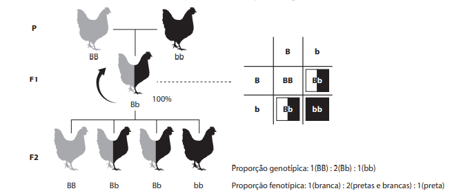
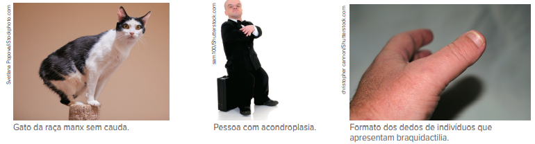

Tipos de coloração das pétalas de flores Camellia japonica.
Como interagem os alelos de um gene? Segundo Mendel, alguns alelos se manifestam no fenótipo do indivíduo mesmo quando se encontram em heterozigose e, portanto, são considerados alelos dominantes. Outros, por sua vez, somente se manifestam quando em homozigose.
A princípio, a ideia de dominância e recessividade dos alelos é bastante simples. Porém, a partir do momento em que a Genética mendeliana passou a ser aplicada a outras espécies de plantas e animais, as proporções fenotípicas
resultantes dos cruzamentos pareciam não respeitar a proporção de 3:1, característica da primeira lei de Mendel. Na imagem retratada, vemos diferentes tipos de fenótipos expressados na espécie Camellia japonica. Por exemplo,
o cruzamento entre plantas com flores vermelhas e plantas com flores brancas sempre gera plantas com flores rosa, isto é, fenótipo intermediário ao dos genitores.
Contudo, essas novas situações não invalidaram ou reduziram
a importância das contribuições de Mendel. A partir de tais casos, foi possível expandir ainda mais a Genética mendeliana, já que também dependem da segregação dos alelos durante a formação dos gametas.
- É possível que existam mais alelos (acima de dois) para um mesmo gene? Por quê?
- Qual a consequência para um indivíduo se alelos letais estiverem presentes no genótipo?
- O que são fenótipos intermediários?
Neste capítulo serão abordadas as habilidades EM13CNT205 , EM13CNT301 e EM13CNT304 .
Alterações nas proporções da primeira lei de Mendel
A escolha do organismomodelo utilizado por Gregor Mendel foi, sem dúvida, de grande relevância para a conclusão de seus trabalhos e a caracterização da herança monogênica. Quando outros pesquisadores replica-
ram os experimentos
em organismos diferentes, nem sempre as proporções fenotípicas correspondiam à de 3:1, provada por Mendel. Esses novos resultados expandiram ainda mais os conhecimentos sobre a forma de heran-
ça que muitas características
podem apresentar.
Penetrância e expressividade
Um dos princípios fundamentais da Genética diz que o fenótipo resulta da interação entre genótipo e am‑
biente. Por isso, mesmo em heranças monogênicas, é possível que indivíduos com mesmo genótipo apresentem fenótipos distintos.
Nesse caso, diz-se que a expressividade de dado caráter é variável. A polidactilia serve como exemplo de uma anomalia genética que tem expressividade variável. Nessa con‑
dição, tem-se o número de dedos das mãos e/ou dos
pés superior à quantidade regular, porém os indivíduos polidáctilos – mesmo tendo o mesmo genótipo para essa característica – podem se diferenciar entre si por apresentarem apenas um dedo extra ou mais de um, e, em um mesmo
indivíduo, os dedos extras podem ser mais ou menos desenvolvidos.
Em heranças monogênicas, conforme observamos nos resultados obtidos nos cruzamentos realizados por Mendel, os fenótipos permitem diferenciar os genótipos
com quase 100% de certeza. Porém, em algumas con‑
dições, os indivíduos podem não manifestar o fenótipo correspondente ao genótipo, caracterizando, assim, a chamada penetrância incompleta.
O termo “penetrância” refere-se
à proporção de indivíduos, em dada população, que expressam o fenótipo esperado pelo genótipo apresentado por eles. Ainda considerando o exemplo da polidactilia, vamos supor que, em certa população, 80% dos indivíduos dotados
do alelo para polidactilia manifestem o fenótipo esperado independentemente da expressividade. A penetrância desse alelo nessa população, portanto, é de 80%, e os demais 20% correspondem a indivíduos que portam o alelo, porém
não manifestam o fenótipo correspondente.
Ausência de dominância
Todas as características das ervilhas-de-cheiro analisadas por Mendel respeitavam a relação de dominância e recessividade entre os alelos que as determinavam. Isso era evidenciado pela proporção fenotípica de 3:1 obtida na geração
F2 (resultante do cruzamento de dois heterozigotos). Contudo, ao fazer o mesmo experimento com algumas outras espécies de vegetais, os pesquisadores notaram que a proporção fenotípica na geração F2 não necessariamente correspondia
aos achados de Mendel. Mais do que isso, eles também observaram que, do cruzamento entre algumas variedades, nenhum dos fenótipos dos genitores predominava na geração F1, e nela surgia um outro fenótipo que parecia uma mistura
entre os fenótipos parentais.
Um desses experimentos foi realizado com a espécie Mirabilis jalapa, popularmente conhecida como flor maravilha, e os resultados dos cruzamentos realizados são mostrados a seguir.
Após estabelecer linhagens puras das variedades de flores brancas (CB CB ) e vermelhas (CV CV ), o cruzamento parental foi realizado entre elas, e, na geração F1 resultante, 100% dos descendentes apresentaram o fenótipo cor-de-rosa
(CV CB ), uma tonalidade distinta da apresentada pelos genitores.
Da autofecundação de F1, os descendentes da geração F2, então, revelaram uma proporção fenotípica diferente da proporção da primeira lei de Mendel. Ao se
cruzarem as variedades cor-de-rosa (CV CB ), obtiveram-se 25% da variedade vermelha (CV CV ), 50% da variedade cor-de-rosa (CV CB ) e 25% da variedade branca (CB CB ), isto é, 1:2:1.
Tais achados, então, permitiram inferir que, em alguns casos, não há relação de dominância e recessividade entre os alelos de dado gene, e que o indivíduo heterozigoto manifesta um fenótipo intermediário. Essa variação,
cuja proporção fenotípica é de 1:2:1, é chamada de ausência de dominância (ou herança intermediária, ou, ainda, dominância incompleta).
Codominância
Outro padrão de herança que também se caracteriza pela ausência da relação de dominância e recessividade entre os alelos de um gene é a chamada codominância. Nela, ambos os alelos serão manifestados no fenótipo do indivíduo heterozigoto.
Um exemplo de ocorrência desse tipo de herança é a determinação da coloração das penas de algumas aves. Considere duas variedades iniciais de galinhas, ambas homozigotas para os respectivos alelos que determinam a cor
branca (bb) e a cor preta (BB). Ao cruzarem-se essas duas variedades, os descendentes da geração F1, além de apresentarem genótipo heterozigoto (Bb), manifestarão no fenótipo as duas variedades de cores da geração parental,
portanto com penas de coloração preta e branca.
Variedade de fenótipos das cores das penas de galinhas.
Exemplo de caso de codominância.
Ao cruzarem-se os descendentes heterozigotos entre si, a geração F2 resultante, então, passa a ser composta de indivíduos com cada uma das variedades de coloração (branca, preta e preta e branca). A proporção fenotípica obtida
nessa prole, assim como na herança com ausência de dominância, também é de 25% da variedade branca (BB), 50% da variedade preta e branca (Bb) e 25% da variedade preta (bb), ou seja, 1:2:1.
A codominância também pode ser
observada em algumas características da espécie humana, como na determinação dos grupos sanguíneos (sistemas ABO e MN), que será abordada no próximo capítulo.
Alelos letais
A alteração da proporção fenotípica em casos de herança monogênica também pode ser ocasionada pela combinação de certos alelos que, em homozigose, provoca a morte dos indivíduos. Por essa razão, esses alelos são conhecidos como
alelos letais ou deletérios.
Em camundongos, a coloração da pelagem é determinada por um par de alelos com relação de dominância e recessividade. Quando camundongos de pelagem amarela são cruzados com outros de pelagem
acinzentada, chamados de agutis ou selvagens, a prole gerada sempre se mostra na proporção fenotípica de 1 (amarelo) : 1 (aguti).
Cruzamento-teste entre variedades de camundongos com diferentes cores de pelagem.
Tal resultado sugere que camundongos amarelos são heterozigotos, enquanto os agutis são homozigotos, e que o alelo que determina a coloração amarela (P) é dominante sobre o alelo aguti (p).
O curioso foi que, ao cruzarem-se
camundongos amarelos (Pp) entre si, a proporção fenotípica entre os descendentes originados sempre era de 2 amarelos para 1 aguti (2:1), diferente da proporção mendeliana clássica de 3:1. Esse resultado indicava que não existiam
camundongos amarelos cujo genótipo fosse homozigoto (PP), e, passados alguns anos, constatou-se que, apesar de gerados, os indivíduos de genótipo PP morriam ainda no útero.
Note que, nessa condição, os alelos que determinam a coloração da pelagem dos camundongos também são responsáveis pela sobrevida do indivíduo, ou seja, um mesmo gene define mais de uma característica na espécie, o que é conhecido como pleiotropia (do grego pleión e trope, que significam, respectivamente, “maior número” e “mudança”).
Pleiotropia: propriedade de um gene determinar mais de uma característica fenotípica.
A letalidade não é, obrigatoriamente, consequência da homozigose de alelos recessivos. Em alguns casos, a homozigose dominante pode determinar a morte precoce dos indivíduos.
Outro exemplo de letalidade é observado em gatos da raça manx. Nesses animais, a condição de cauda ausente é determinada por um alelo que é letal quando em homozigose. Nos seres humanos, também são encontrados alguns alelos letais, como na doença de Tay-Sachs, na qual o indivíduo afetado apresenta cegueira, paralisia e morte nos primeiros anos de vida. A acondroplasia – um tipo de nanismo em que a cabeça e o tronco têm tamanhos normais, mas os braços e pernas são mais curtos – e a braquidactilia – que faz com que os dedos das mãos sejam mais curtos – são outros exemplos em que a combinação de alelos em homozigose é letal para os seres humanos.
Na doença de Tay-Sachs, os indivíduos não afetados podem apresentar genótipo homozigoto dominante ou genótipo heterozigoto, enquanto os indivíduos afetados têm genótipo homozigoto recessivo. Já na acondroplasia e na braquidactilia, os indivíduos não afetados apresentam genótipo homozigoto recessivo, enquanto aqueles que manifestam a doença e sobrevivem a ela são, necessariamente, heterozigotos; a homozigose com alelos dominantes ocasiona a morte do indivíduo ainda no útero ou logo após ele nascer
Alelos múltiplos
Uma célula somática diploide de um indivíduo possui dois alelos de cada gene, cada um fornecido pelos respectivos genitores. Até agora, vimos os casos em que um gene apresenta somente dois tipos de alelos. Entretanto, para alguns
genes pode haver mais do que apenas duas variações, sendo essa condição conhecida como alelos múltiplos, ou polialelia.
A presença de alelos múltiplos possibilita a formação de um número variável de classes fenotípicas,
que dependerá das relações estabelecidas entre esses alelos, as quais podem ser qualquer uma das apresentadas até o momento (dominância e recessividade, ausência de dominância, codominância e letalidade).
Para exemplificar,
vamos considerar o gene C responsável pela determinação da cor da pela-gem de coelhos. Esse gene apresenta quatro diferentes alelos (C, cch, ch e c) que estabelecem entre si relações de dominância e recessividade, determinando
os fenótipos apresentados na tabela acima.
Nesse caso, a relação de dominância respeita a condição C > cch > ch > c, ou seja: o alelo C é dominante sobre todos os outros; o alelo cch é dominante sobre ch e c; e o alelo
ch é dominante sobre c. Há quatro fenótipos (aguti, chinchila, himalaio e albino) e dez genótipos possíveis.
Vamos analisar a situação ao lado: em uma caixa, foram mantidos dois coelhos, uma fêmea chinchila e um macho
albino. Depois de um tempo, a fêmea gerou oito descendentes: quatro chinchilas, dois himalaios e dois albinos. Com base na prole, qual o provável genótipo da fêmea?
Cruzamento entre uma coelha chinchila e um coelho albino.
De início, identificamos, entre os descendentes, a presença de um fenótipo distinto dos apresentados pelos genitores, no caso os coelhos himalaios. É certo que, no genótipo de todos os descendentes, há um alelo c, já que o pai
(cc) só fornece esse alelo. A origem do alelo ch dos descendentes himalaios é, necessariamente, a fêmea, que, portanto, é portadora do genótipo cchch .
Considerando que, em outro momento, essa mesma fêmea foi cruzada com
um macho de fenótipo aguti cuja mãe era albina, quais as proporções genotípica e fenotípica esperadas para a prole desse cruzamento?
A prole, nesse caso, apresentaria três variedades de fenótipo: aguti, chinchila e himalaio. A proporção fenotípica esperada seria de 1 chinchila : 2 agutis : 1 himalaio, enquanto a proporção genotípica seria de 1 cchc : 1 ch c
: : 1 Ccch : 1 Cch .
Os alelos múltiplos também estão presentes na espécie humana, como na determinação do sistema sanguíneo ABO.
Questão resolvida
1
UFU-MG 2015 O quadro abaixo apresenta a distribuição de cinco alelos cujas combinações fenotípi‑ cas são responsáveis pela cor do olho em uma certa espécie de abelha.
Com base nas informações do quadro, qual a ordem de dominância dos diferentes alelos?
- bp > bm > bn > bc > b.
- bm > bp > bn > bc > b.
- bm > bp > bc > b > bn .
- bp > b > bc > bn > bm.
Resolução:
Alternativa: B
Para estabelecer as relações de dominância e recessividade entre os cinco alelos que determinam a cor dos olhos de certa espécie de abelha, é preciso, primeiro, identificar qual desses alelos só se mani‑ festa
quando em homozigose. Nesse caso temos o padrão de coloração amarelo definido pelo alelo b, o que significa que todos os outros quatro alelos predominam sobre ele. Em seguida, é necessária a identificação do alelo que predomina
apenas sobre o alelo b, aqui representado pelo alelo bc , o qual define a cor creme. Depois, é feito o mesmo para identificar o próximo alelo que predomina sobre bc e b, no caso o alelo bn (neve). Predominando sobre bn , bc
e b está o alelo bp (pérola); predominando sobre os demais alelos, o bm (marrom).
1
Em camundongos, o gene que determina a coloração da pelagem apresenta dominância completa. Ao cruzar indivíduos amarelos (Pp 3 Pp), observou-se que a prole apresentava uma proporção diferente da esperada por Mendel, de 3:1. Nesse caso, a proporção era de 2 indivíduos amarelos : 1 aguti. Explique o que pode ter causado essa diferença.
2
Quando o fenótipo heterozigoto apresenta características de ambos os alelos, qual tipo de dominância está ocorrendo?
3
Escreva as proporções fenotípicas esperadas do cruzamento entre indivíduos heterozigotos quando há:
- dominância completa.
- dominância incompleta.
4
O que são alelos múltiplos? Quantos alelos de cada gene existem em um indivíduo?
5
O que causa a formação de alelos múltiplos?
1
Unicamp-SP Gatos Manx são heterozigotos para uma mutação que resulta na ausência de cauda (ou cauda muito curta), presença de pernas traseiras grandes e um andar diferente dos outros. O cruzamento de dois gatos Manx produziu dois gatinhos Manx para cada gatinho normal de cauda longa (2:1), em vez de três para um (3:1), como seria esperado pela genética mendeliana.
- Qual a explicação para esse resultado?
- Dê os genótipos dos parentais e dos descendentes. (Utilize as letras B e b para as suas respostas).
2
Unicamp-SP 2019 A “maravilha” (Mirabilis jalapa) é uma planta ornamental que pode apresentar três tipos de fenótipo: plantas com ramos verde-escuro, plantas com ramos brancos e plantas mescladas. Plantas mescladas possuem ramos verde-escuro, ramos brancos e ramos variegados. Como mostra a figura a seguir, todas as células de ramos verde-escuro possuem cloroplastos normais (com clorofila). Todas as células de ramos brancos possuem cloroplastos mutantes (sem clorofila). Ramos variegados contêm células com cloroplastos normais, células com cloroplastos mutantes e células com ambos os tipos de cloroplastos.
(Disponível em http://www.chegg.com/homework-help/.)
Na formação de sementes, os cloroplastos são herdados apenas dos óvulos. A progênie resultante da fertilização de óvulos de flores presentes em um ramo variegado com pólen proveniente de flores de um ramo verde-escuro conterá
- apenas plantas com ramos de folhas brancas.
- plantas dos três tipos fenotípicos.
- apenas plantas mescladas.
- apenas plantas com ramos de folhas verde-escuras.
3
Fuvest-SP Numa espécie de planta, a cor das flores é determinada por um par de alelos. Plantas de flores vermelhas cruzadas com plantas de flores brancas produzem plantas de flores cor-de-rosa. Do cruzamento entre plantas de flores cor-de-rosa, resultam plantas com flores
- das três cores, em igual proporção.
- das três cores, prevalecendo as cor-de-rosa.
- das três cores, prevalecendo as vermelhas.
- somente cor-de-rosa.
- somente vermelhas e brancas, em igual proporção.
4
Unicid-SP 2018 Em galinhas da raça andaluza, o alelo PB condiciona a coloração branca da plumagem e o alelo PP condiciona a coloração preta da plumagem. O cruzamento entre parentais homozigotos com fenótipos diferentes gera todos os descendentes F1 com plumagem cinza azulada, um fenótipo intermediário em relação aos parentais.
- Como é denominado o tipo de herança na qual F1 apresenta fenótipo intermediário àquele dos pais? Esquematize o cruzamento entre os parentais citados no enunciado, utilizando os alelos fornecidos.
- Esquematize o cruzamento entre heterozigotos para tais alelos e indique as proporções, fenotípica e genotípica, esperadas para os descendentes da geração seguinte.
5
UFRGS O quadro apresenta a distribuição dos 4 diferentes alelos do gene A cujas combinações genotípicas são responsáveis pelos padrões de coloração da pelagem de algumas raças caninas.
6
Fuvest-SP 2017 Uma determinada malformação óssea de mãos e pés tem herança autossômica dominante. Entretanto, o alelo mutante que causa essa alteração óssea não se manifesta em 30% das pessoas heterozigóticas, que, portanto, não apresentam os defeitos de mãos e pés. Considere um casal em que a mulher é heterozigótica e apresenta essa alteração óssea, e o homem é homozigótico quanto ao alelo normal.
- Que genótipos podem ter as crianças clinicamente normais desse casal? Justifique sua resposta.
- Qual é a probabilidade de que uma criança que esse casal venha a ter não apresente as alterações de mãos e pés? Justifique sua resposta.
7
FGV-SP 2018 O padrão genético da cor da pelagem na raça bovina Shorthorn é um exemplo de codominância cujos dois alelos autossômicos envolvidos na pigmentação do pelo se manifestam no heterozigoto, denominado ruão. Os homozigotos apresentam a cor da pelagem vermelha ou branca.
(http://www.uel.br. Adaptado)
Um criador dessa raça, ao cruzar um casal de animais cuja pelagem é do tipo ruão, em três gestações subsequentes, obteve, em cada gestação, uma fêmea com pelagem vermelha.
A probabilidade de repetição idêntica desses resultados
nas próximas três gestações seguidas, a partir dos mesmos animais reprodutores, é de
- 1/16.
- 1/24.
- 1/128.
- 1/512.
- 1/4 096.